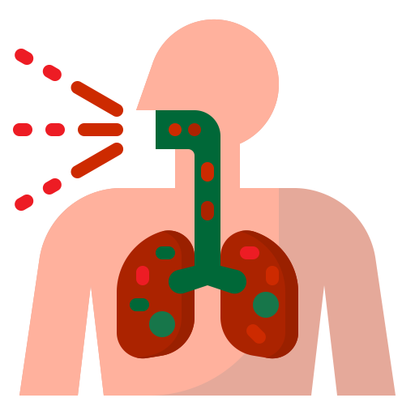
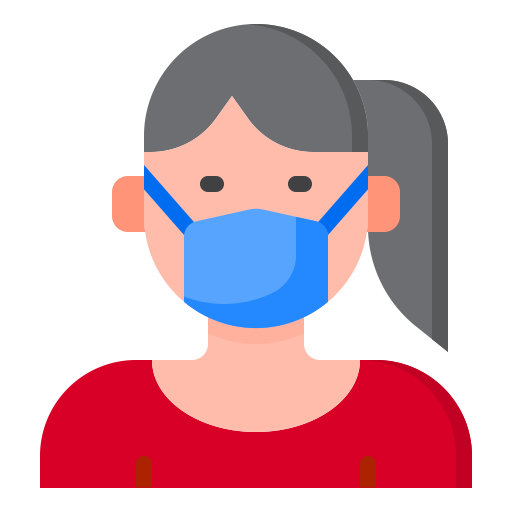

Apa itu Coronavirus?
 Ilustrasi Coronavirus | Image by: Freepik from www.flaticon.com
Ilustrasi Coronavirus | Image by: Freepik from www.flaticon.com
Coronavirus adalah suatu kelompok virus yang dapat menyebabkan penyakit pada hewan atau manusia. Beberapa jenis coronavirus diketahui menyebabkan infeksi saluran nafas pada manusia mulai dari batuk pilek hingga yang lebih serius seperti Middle East Respiratory Syndrome (MERS) dan Severe Acute Respiratory Syndrome (SARS). Coronavirus jenis baru yang ditemukan menyebabkan penyakit COVID-19.
Apa itu COVID-19?
Ilustrasi COVID-19 | Image by: Freepik from www.flaticon.com
Virus Corona atau Severe Acute Respiratory Syndrome Coronavirus 2 (SARS-CoV-2) adalah virus yang menyerang sistem pernapasan. Penyakit karena infeksi virus ini disebut COVID-19. Virus Corona bisa menyebabkan gangguan ringan pada sistem pernapasan, infeksi paru-paru yang berat, hingga kematian.
Severe Acute Respiratory Syndrome Coronavirus 2 (SARS-CoV-2) yang lebih dikenal dengan nama virus Corona adalah jenis baru dari coronavirus yang menular ke manusia. Virus ini bisa menyerang siapa saja, baik bayi, anak-anak, orang dewasa, lansia, ibu hamil, maupun ibu menyusui.
Infeksi COVID-19 pertama kali ditemukan di kota Wuhan, Cina, pada akhir Desember 2019. Virus ini menular dengan sangat cepat dan telah menyebar ke hampir semua negara, termasuk Indonesia, hanya dalam waktu beberapa bulan.
Cara Penularan
Cara Penularan | Image by: Freepik from www.flaticon.com
Orang dapat tertular COVID-19 dari orang lain yang terjangkit virus ini. COVID-19 dapat menyebar dari orang ke orang melalui percikan-percikan dari hidung atau mulut yang keluar saat orang yang terjangkit COVID-19 batuk atau mengeluarkan napas. Percikan-percikan ini kemudian jatuh ke benda-benda dan permukaan-permukaan di sekitar. Orang yang menyentuh benda atau permukaan tersebut lalu menyentuh mata, hidung atau mulutnya, dapat terjangkit COVID-19. Penularan COVID-19 juga dapat terjadi jika orang menghirup percikan yang keluar dari batuk atau napas orang yang terjangkit COVID-19. Oleh karena itu, penting bagi kita untuk menjaga jarak lebih dari 1 meter dari orang yang sakit. WHO terus mengkaji perkembangan penelitian tentang cara penyebaran COVID-19 dan akan menyampaikan temuan-temuan terbaru.
Gejala

Gejala COVID-19 | Image by: Freepik from www.flaticon.com
Gejala-gejala COVID-19 yang paling umum adalah demam, rasa lelah, dan batuk kering. Beberapa pasien mungkin mengalami rasa nyeri dan sakit, hidung tersumbat, pilek, sakit tenggorokan atau diare, Gejala-gejala yang dialami biasanya bersifat ringan dan muncul secara bertahap. Beberapa orang yang terinfeksi tidak menunjukkan gejala apa pun dan tetap merasa sehat. Sebagian besar (sekitar 80%) orang yang terinfeksi berhasil pulih tanpa perlu perawatan khusus. Sekitar 1 dari 6 orang yang terjangkit COVID-19 menderita sakit parah dan kesulitan bernapas. Orang-orang lanjut usia (lansia) dan orang-orang dengan kondisi medis yang sudah ada sebelumnya seperti tekanan darah tinggi, gangguan jantung atau diabetes, punya kemungkinan lebih besar mengalami sakit lebih serius. Mereka yang mengalami demam, batuk dan kesulitan bernapas sebaiknya mencari pertolongan medis.
Tindakan Pencegahan

Pencegahan | Image by: Freepik from www.flaticon.com
Sampai saat ini, belum ada vaksin untuk mencegah infeksi COVID-19. Oleh sebab itu, cara pencegahan yang terbaik adalah dengan menghindari faktor-faktor yang bisa menyebabkan Anda terinfeksi virus ini, yaitu:
- Terapkan physical distancing, yaitu menjaga jarak minimal 1 meter dari orang lain, dan jangan dulu ke luar rumah kecuali ada keperluan mendesak.
- Rutin mencuci tangan dengan air dan sabun atau hand sanitizer yang mengandung alkohol minimal 60%, terutama setelah beraktivitas di luar rumah atau di tempat umum.
- Jangan menyentuh mata, mulut, dan hidung sebelum mencuci tangan.
- Tingkatkan daya tahan tubuh dengan pola hidup sehat.
- Hindari kontak dengan penderita COVID-19, orang yang dicurigai positif terinfeksi virus Corona, atau orang yang sedang sakit demam, batuk, atau pilek.
- Tutup mulut dan hidung dengan tisu saat batuk atau bersin, kemudian buang tisu ke tempat sampah.
- Jaga kebersihan benda yang sering disentuh dan kebersihan lingkungan, termasuk kebersihan rumah.